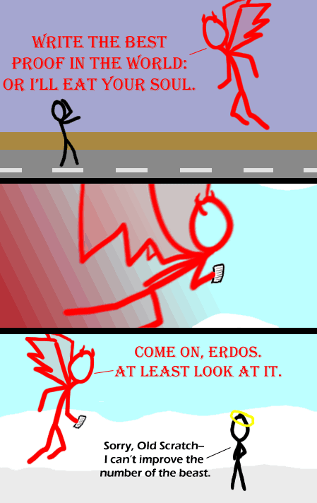

Comic JK 373
When I Feel Like It
⇤
<
?
>
⇥

⇤
<
?
>
⇥
Forum
.
RSS
.
Digg
.
Facebook
.
Reddit
.
Twitter
.
Stumbleupon
------------------------------------------------------------------------------------- Long time ago me and my brother Kyle here,... we was hitchhikin' down a long and lonesome road. All of a sudden, there shined a shiny demon... in the middle... of the road. And he said: "Write the best proof in the world: or I'll eat your soul." Well me and Kyle,... we looked at each other, and we each said... "Okay." And we wrote the first thing that came to our heads, Just so happened to be, The Best Proof in the World, it was The Best Proof in the World. Look into my eyes and it's easy to see One and one make two, Two and one make three, It was destiny. Once every hundred-thousand years or so, When the sun doth shine and the moon doth glow and the grass doth grow oooh Needless to say, the beast was stunned. Whip-crack went his whippet tail, And the beast was done. He asked us: "BE you angels?" And we said, "Nay. We are but men." ....he then stole our proof! :( ------------------------------------------------------------------------------------- *applause* > Write it again! Erdős <3 Ok, I hardly understand this comic, but I lol'd damn hard at those lyrics. - Wisknort >Look up "Erdos number" and "Bacon number" on Wikipedia. This does raise the question... what proof might you choose in this case? Might go for the cliche of proving e^(i*pi) = -1. You know, since mathematicians haven't jerked off Euler enough as it is.